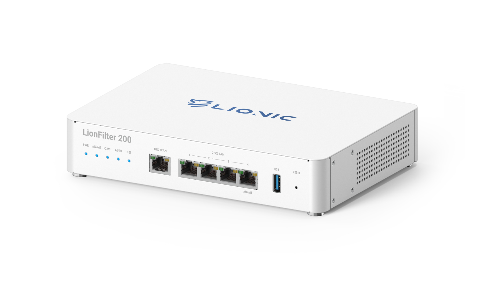
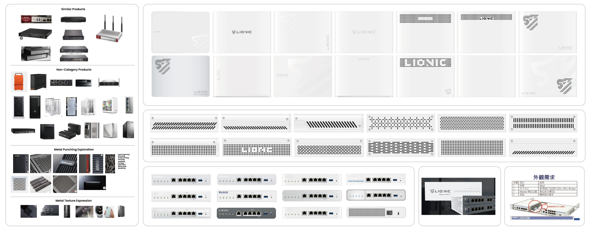
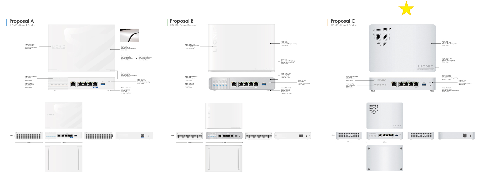
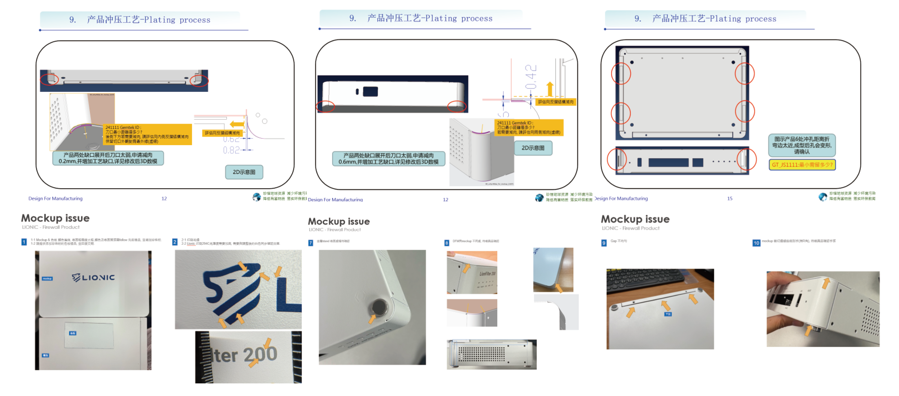
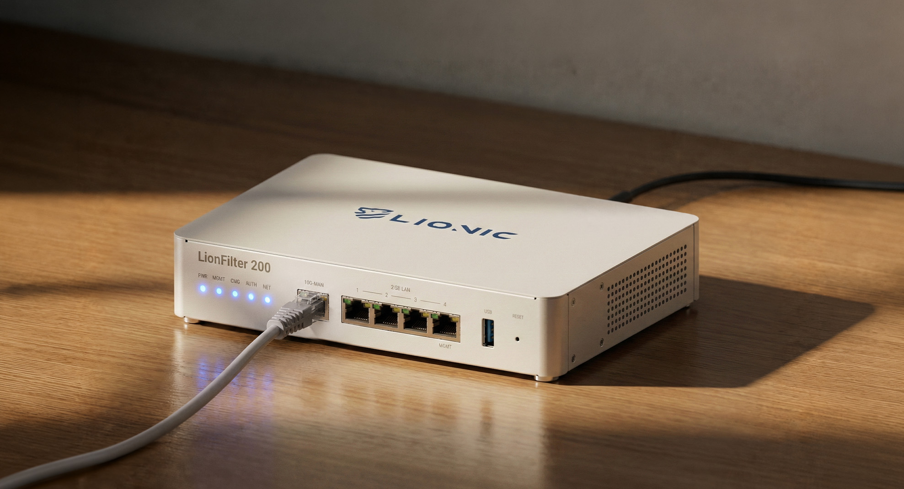
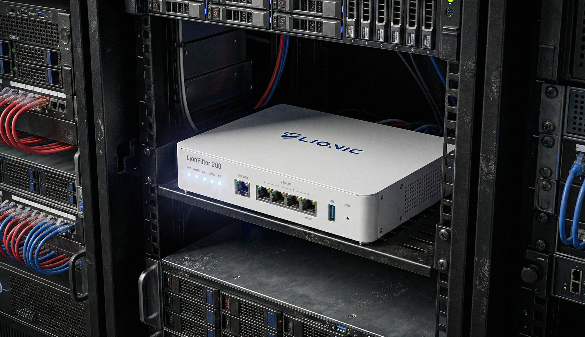
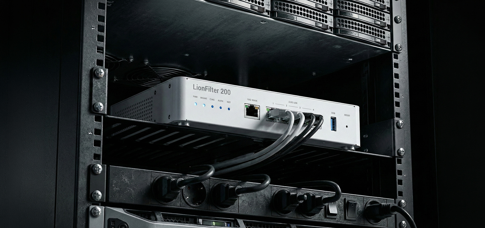

Lionic LionFilter 200

A next-gen firewall designed from concept to delivery.
A collaboration with Lionic to design their next-generation firewall product, carrying forward the brand's established design language. The project spanned the full end-to-end process — from initial concept proposals through to mass production and successful delivery. Throughout the development, close coordination with in-house mechanical engineers was essential to preserve the client's signature design elements: the distinctive rounded corners and stainless steel base — a deliberate departure from the sharp-edged metal boxes typical of the industry.

When designing this product, the client's expectation was to create a high-quality, light-toned, premium product while minimizing the use of plastic parts and prioritizing the metal bending process. This challenge sparked my creative exploration of both design details and CMF. I chose a rare four-rounded-corner design, combined with polished aluminum feet, to give the product a distinct and elegant aesthetic. Additionally, I applied a refined pearl paint finish across all surfaces, achieving a luxurious texture that gained high praise from the client and successfully moved into mass production.
Throughout the design process, I collaborated closely with mechanical engineers to evaluate the feasibility of metal corner bending and ensure DFM alignment. By integrating industrial design creativity with production oversight, I was able to enhance the product's market value while ensuring both visual appeal and manufacturing feasibility.
Breaking away from the conventions of the product category, I explored inspiration across diverse fields — business computer cases, server chassis, watches, and even water bottles. This broad research fueled the development of CMF ideas, bringing fresh possibilities to this product. By focusing on emotional resonance, I selected materials and textures with a refined tactile quality. I even drew inspiration from the PET film techniques used in smartphone back covers, blending craftsmanship with innovation — gradually refining and focusing ideas from a realm of boundless creativity.

Comparing Proposals and Defining the Final Approach
The final design was narrowed down to three versions, each distinguished primarily by its disassembly method. The disassembly approach directly influenced the appearance and was paired with various CMF treatments such as spray painting, screen printing, stamping, and laser engraving to create diverse combinations. I also explored and experimented with venting hole designs, and ultimately, the client selected proposal C as the final choice.

Although the client found the design highly creative, they ultimately decided to eliminate the decorative perforations to reduce costs and remove branding elements for white-label distribution. Key elements such as the rounded corners, front panel, and aluminum base were retained. After several rounds of revisions, the final design was approved.
I collaborated closely with mechanical engineers on DFM to ensure design modifications did not significantly impact the appearance. The challenge is especially evident with the metal bending of the four rounded corners, where simplifying it to a two-piece design results in noticeable gaps. Therefore, my task is to minimize the visible gaps as much as possible.

Following the start of tooling, I was tasked with reviewing and tracking all ID/CMF elements for plastic and galvanized steel parts. This includes fine-tuning powder coating colors, refining textures, controlling glossiness, and managing assembly gap/step precision.


